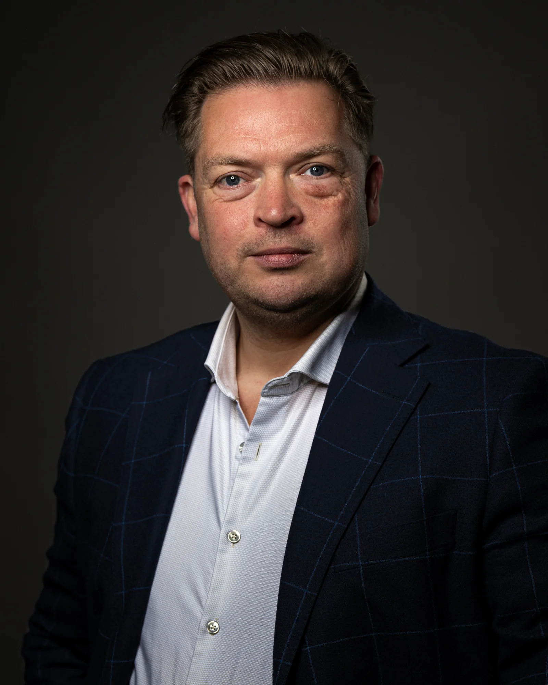
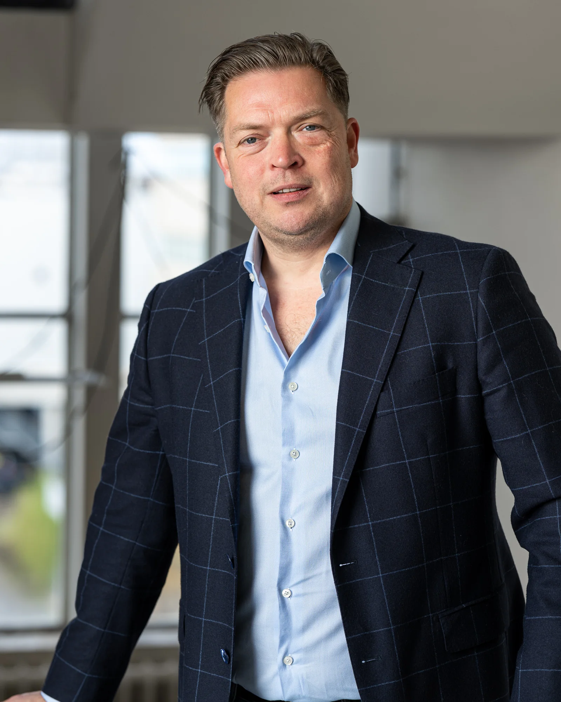
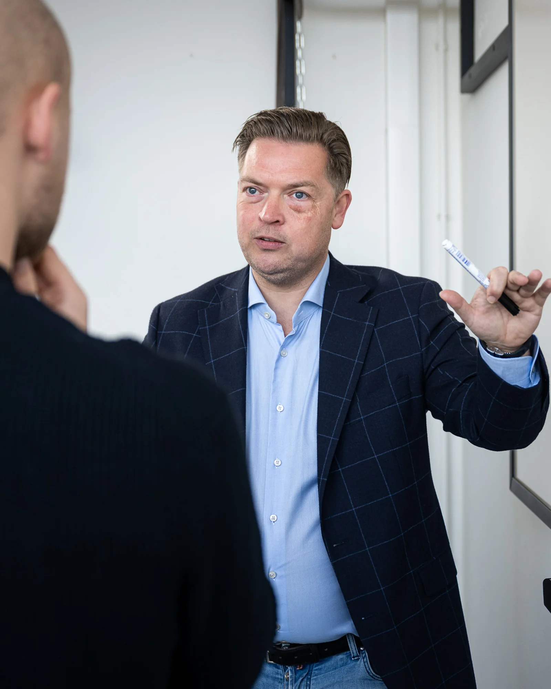

Mensen ontwikkelen. Grenzen verleggen. Resultaten realiseren.
Ik geloof niet in mensen vertellen wat ze moeten doen. Ik geloof in mensen laten ontdekken waartoe ze écht in staat zijn.


Al ruim 18 jaar ondernemer, en nog steeds nieuwsgierig.
Gedreven, nieuwsgierig, resultaatgericht en soms behoorlijk eigenwijs. Ik houd van mensen, van ondernemen en van organisaties die vooruit willen. Niet van mooie plannen die uiteindelijk in een la verdwijnen.
Wat mij fascineert, is het verschil tussen wat mensen kunnen en wat ze daadwerkelijk laten zien.
Waarom haalt de ene verkoper alles uit een klantgesprek, terwijl de ander kansen laat liggen? Waarom weet een leidinggevende precies wat er moet gebeuren, maar blijft dat lastige gesprek toch uit? En waarom investeren organisaties volop in ontwikkeling, terwijl het gedrag op de werkvloer nauwelijks verandert?
Precies daar begint voor mij het interessante werk.
“Ik train niet om trainingsdagen te vullen. Ik ontwikkel mensen om organisaties sterker te maken.”
Frank van Engelen
“Ik stel liever een lastige vraag dan dat ik een makkelijk antwoord geef.”
Ik ben niet van de standaardverhalen, ingestudeerde trucjes of trainingen waarbij iedereen enthousiast naar huis gaat en maandag weer precies hetzelfde doet.
Ik wil weten wat er écht speelt. Waar liggen de ambities? Wat houdt mensen tegen? Waar zit onbenut potentieel? En welke patronen blijven bestaan omdat niemand ze ter discussie stelt?
Ik luister, observeer, vraag door en confronteer waar nodig. Direct en scherp, maar altijd met respect en de nodige humor. Want een spiegel voorhouden hoeft niet ongemakkelijk te zijn. Al mag het best even schuren.
Ik ben niet geïnteresseerd in wat mensen aan het einde van een training allemaal weten. Ik wil zien wat ze daarna anders doen.
Geen verandering voor de vorm. Resultaat dat je merkt.
Eerst begrijpen. Dan uitdagen. Vervolgens ontwikkelen.
En vooral zorgen dat het geleerde daadwerkelijk wordt toegepast. Of ik nu werk met een commercieel team, een groep leidinggevenden of de directie van een organisatie: mijn uitgangspunt blijft hetzelfde.
Dat vraagt om meer dan een goed trainingsprogramma. Het vraagt inzicht in mensen, begrip van de organisatie en de bereidheid om bestaande overtuigingen ter discussie te stellen.
Ik geloof in persoonlijke aandacht, intensief oefenen, eerlijke feedback en verantwoordelijkheid nemen. Niet alles hoeft ingewikkelder. Sterker nog, vaak zit de grootste vooruitgang juist in het eenvoudiger maken van wat we doen.
Persoonlijk betrokken
U werkt rechtstreeks met Frank. Hij blijft betrokken bij het ontwikkelproces, niet alleen bij de training.
Eerst begrijpen
Geen standaardverhaal. Eerst kijken naar de organisatie, de mensen en wat er echt speelt.
Praktijk boven PowerPoint
Veel oefenen met herkenbare situaties en feedback, in plaats van theorie van de plank.
Inzicht vooraf
Waar passend krijgen deelnemers inzicht in hun drijfveren en gedragspatronen, onder meer met een assessment van Nine Wisdoms.
Het management doet mee
Het geleerde wordt pas gedrag als het management het ondersteunt. Daarom betrekken we hen er vanaf het begin bij.
Een blik van buiten
Zonder geschiedenis en zonder blinde vlekken, met ervaring uit andere organisaties.

“Ik ben betrokken, maar niet vrijblijvend.”
Ik durf kritisch te zijn en verwacht ook inzet van de mensen met wie ik werk.
Want echte ontwikkeling ontstaat niet door alleen maar te luisteren. Het vraagt lef om kritisch naar jezelf te kijken, verantwoordelijkheid te nemen en daadwerkelijk iets anders te gaan doen.
Ik krijg energie van mensen die zichzelf weten te verrassen. Van die accountmanager die eindelijk de juiste vragen stelt in plaats van direct zijn product te verkopen. Van een leidinggevende die niet langer om een lastig gesprek heen draait. Of van een team dat ontdekt dat samenwerken meer is dan vriendelijk zijn tegen elkaar.
Dat zijn geen grote theoretische doorbraken. Dat zijn veranderingen die je terugziet in de dagelijkse praktijk. En daar doe ik het voor.
Ik breng enthousiasme, ervaring en een flinke dosis ondernemerschap mee. Maar ik verwacht ook iets terug: openheid, betrokkenheid en de wil om beter te worden. Want ontwikkeling is geen kwestie van achteroverleunen en hopen dat de trainer iets bijzonders komt vertellen. Wie echt vooruit wil, moet ook bereid zijn om zichzelf uit te dagen.
Twee ontwikkelgebieden, aangevuld met advies en interim management.
Beide gebieden hebben hetzelfde doel: mensen beter laten functioneren en organisaties helpen betere resultaten te behalen.
Zullen we het eens ergens écht over hebben?
Ik ben benieuwd naar jouw organisatie. Naar de ambities, de mensen en vooral naar de uitdagingen die misschien al wat langer op tafel liggen.
Geen standaardpresentatie of ingewikkelde verkooppraatjes. Gewoon een goed, open gesprek waarin we ontdekken waar kansen liggen en wat er nodig is om die te benutten. En mocht ik daarbij een vraag stellen die je niet had verwacht? Dan zijn we waarschijnlijk al goed begonnen.
Frank van Engelen
VEMAT | Commerciële ontwikkeling & Leiderschap
Sterkere mensen. Sterkere prestaties.